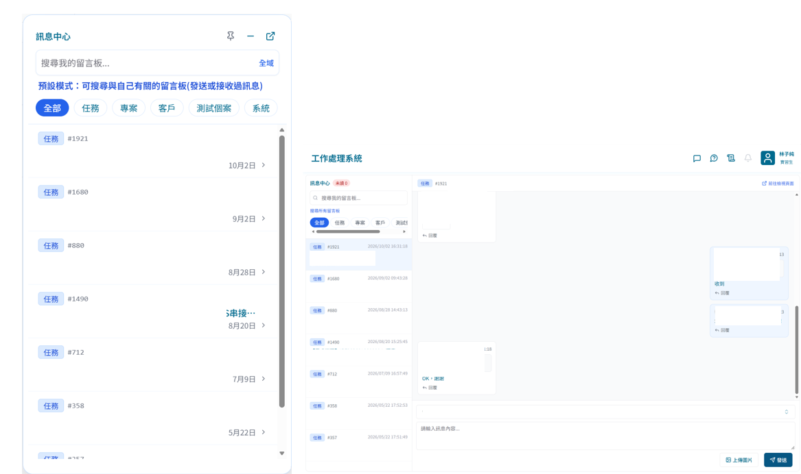
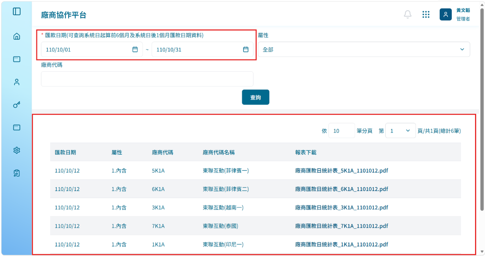
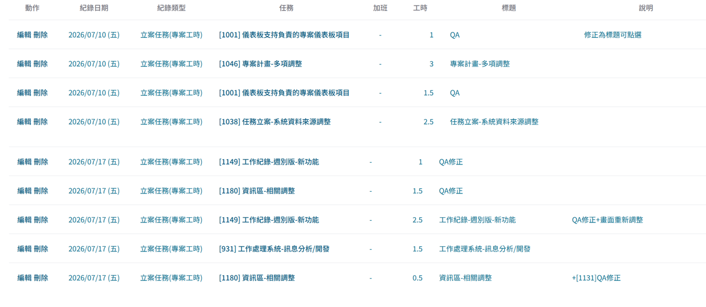
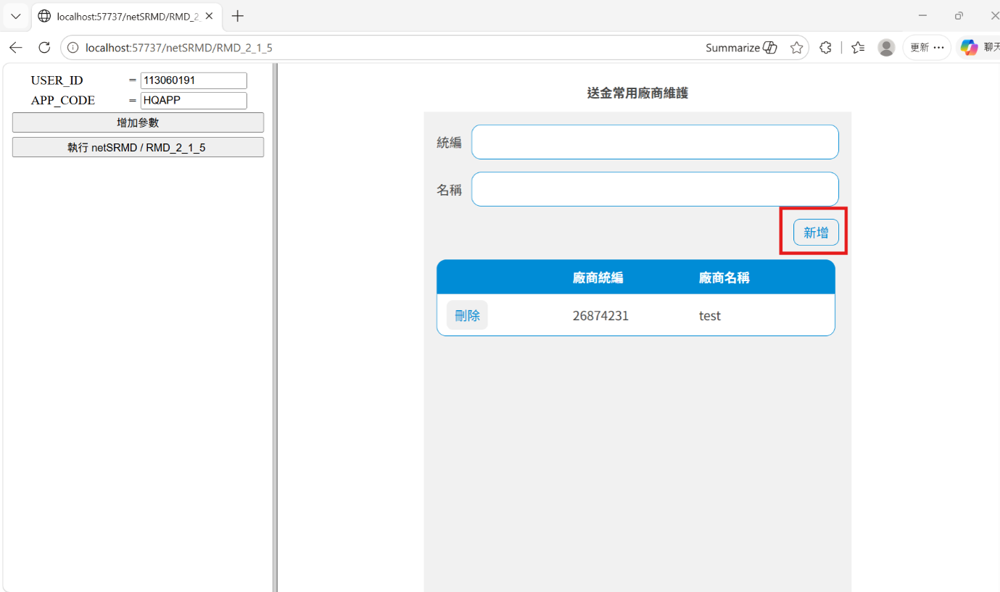
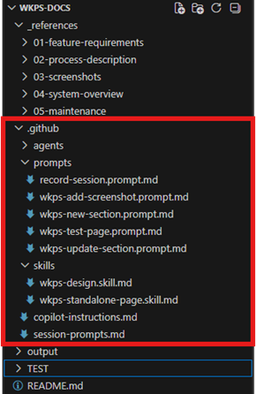
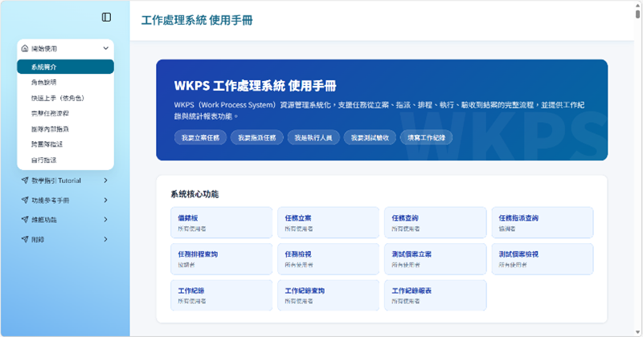

之前的任務都是主管訂好功能樣式我們直接開發，這是第一次我們需要從UI/UX開始設計，接著撰寫相關需求文件，最後進行開發，整個過程都需要考慮到使用者的使用體驗，在過程中反覆調整操作邏輯，雖然剛開始覺得有點困難和複雜，但看到功能上線後覺得非常有成就感。

這個專案是全新專案，裡面完全其他支功能可以參考，DB還是使用我不太熟悉的DAL進行存取，所以我回過頭找剛入職時公司提供的文件和練習專案來複習，多虧了有剛入職時的基礎，所以看著文件我才能夠快速恢復記憶和上手。

我進行了多個功能的新開發與維護，透過不斷跟AI進行互動，我已經能夠精準且快速的下prompt，使用AI幫我完成多項任務所需的調整。

這個任務是為了幫助使用者可以簡化每次輸入作業而新增的功能。因為已經熟悉這種類型的開發流程，所以很順利地完成了，過程中遇到規格書中疑惑的部分，我也已經可以順暢地跟SA進行溝通、確認具體操作方式。

這是我的第一支全流程開發任務，主管模擬客戶的角色丟出需求，我需要針對需求進行分析與設計，再撰寫規格文件，最後進行開發。
剛開始的需求確認對我來說不是簡單的事，需要仔細從多種解決方法裡找出最適當的方案跟主管討論，這支任務其實主管已經有給我一點方向，下一支任務我應該再多一些這方面的練習。並且之前都是寫給AI看的文件比較多，這次主管提醒我除了要寫給AI看，還有另一種則是要給客戶看的，怎麼使用簡單清楚的表達讓客戶明白很重要，而我的內容經常很難讓人一眼抓到重點，還需要多加練習。


透過各項維護工作，我逐漸學會依據錯誤狀況來分析問題來源，並比對現有程式碼找出關鍵錯誤點。在實習初期遇到報錯時我完全無從下手，只能請求學長協助；但隨著經驗的累積，以及觀摩學長除錯的方式，我也逐漸掌握閱讀錯誤訊息、設置中斷點等技巧。
這些實務經驗幫助我建立起清晰的問題分析流程，在面對複雜情境時能有條理地拆解並逐步解決，也提升了我獨立處理系統問題的信心與能力。
這次實習是第一次接觸 Git 進行版本控制。從 KM 知識庫建立、WKPS 系統維護到使用手冊開發，由於皆為多人協作，均採用 Git 管理版本。
我透過 AI 輔助自學，逐漸熟悉 Git 的使用方式，也理解版本控制在多人協作與軟體開發中的重要角色，為未來的開發工作奠定良好的版本管理基礎。
在實習前我較不擅長主動表達，但在實習期間，遇到問題如果不主動詢問便難以推進工作，功能修改也需要與 SA 確認需求細節。在這樣的環境中，我逐漸學會如何先釐清問題再提問，也培養出更清楚、有條理地表達自身想法的能力。
部門主管非常鼓勵我們能善用 AI 加速開發，而學會靈活運用 AI 而非被 AI 主導，正是這個時代必備的能力之一。
透過大量實作練習，我學會先分析真正的問題、縮小問題範圍再進行提問，而非直接把大量程式碼丟給 AI 自由發揮。當發現 AI 回應開始偏離主軸時，也需要及時察覺並修正方向，避免走偏太遠。
剛開始我以為只要依照規格執行、確認符合說明就好了，但實際接觸後才發現，測試工作遠不止於此——需要設想各種使用者操作情境，針對不同條件進行驗證，確保系統在各種狀況下均能正確運作。
如果測試中出現錯誤，也應該要進一步釐清是邏輯還是結構面的問題，才能快速解決錯誤。
在實習期間，我主要扮演「學習者」與「執行者」的雙重角色。
整體而言，這次實習讓我從一個對業界開發流程幾乎陌生的學生，逐步成長為能夠獨立承接任務、完成交付的開發者，也讓我對未來想投入的方向有了更清楚的認識。
在技術方面，一開始的其實非常不適應。剛進入公司時，面對實際專案的架構、規格書以及開發流程，常常會有看不懂、不知道從哪裡開始的情況。尤其是第一次接觸 DA 架構、實際串接 API、閱讀既有程式碼時，與在學校做專案的感受完全不同。學校的程式大多是自己從零開始撰寫，因此對整體邏輯都非常熟悉；但在公司裡，更多時候是需要快速理解既有系統，再接著進行修改與開發，這對我來說是一個很大的挑戰。
不過透過主管與同事的協助，以及自己不斷練習與查資料，我開始慢慢能夠理解整體開發流程，也逐漸學會如何閱讀規格書、追蹤錯誤原因以及分析問題。從一開始只會依賴別人協助，到後來能夠自行下中斷點除錯、看懂錯誤訊息、嘗試提出自己的解決方式，我認為自己的技術理解能力與問題解決能力都有非常明顯的提升。
另外，在工具的使用上，我也學到了許多在學校較少接觸的內容。例如 Git 版本控制、AI 輔助開發工具等，這些都讓我更貼近目前業界的開發模式。尤其是在 AI 協作方面，我學會如何利用 AI 協助自己整理思路、產生程式範例以及加速除錯流程，但同時也理解到 AI 並不是完全可靠的答案來源，而是需要開發者具備判斷能力，才能真正有效率地運用。
在軟實力方面，我認為自己最大的成長是在「溝通」與「提問能力」。一開始因為擔心自己問的問題太基礎，常常不敢開口，但後來我逐漸發現，在職場中比起不問導致方向錯誤，更重要的是能夠及時確認需求與理解內容。因此我開始學習如何整理問題、清楚表達自己的卡點，以及如何在提問前先自行嘗試與查找資料。我覺得這不只是技術上的成長，更是在職場適應能力上的重要進步。
當然，我也認為自己還有許多需要進步的地方。例如在面對全新的規格書或大型架構時，我仍然需要較長的時間才能完全理解；有時候在問題分析上，也容易因為經驗不足而忽略細節。此外，在 AI 協作方面，我也希望未來能更深入學習如何撰寫精準且高效率的提示詞，讓 AI 能真正成為提升工作效率的工具，而不是單純依賴它產生答案。
這次實習讓我更了解自己的不足，也讓我知道未來應該努力的方向。我相信這些經驗不只是技術上的累積，更是幫助我從學生逐漸轉變成職場工作者的重要過程。
在這次的實習過程中，我最大的收穫其實不只是技術能力的提升，而是對「學習」以及「職場」有了全新的理解。
在學校時，學習通常有明確的範圍與步調，只要按照課程進度完成作業與專題，就能慢慢掌握知識。但真正進入公司後，我才發現職場上的學習方式完全不同。很多時候沒有人會一步一步教你，而是需要自己快速理解問題、主動尋找答案，並且在有限時間內完成任務。這種學習方式讓我一開始感到非常有壓力，也曾經懷疑自己是否真的跟得上。
尤其是在剛開始接觸正式專案時，常常會因為看不懂規格、不了解系統架構，導致開發進度落後。當時我最大的感受就是「學校與業界真的差很多」。但也因為這樣的環境，我開始學習如何主動面對問題，而不是等待別人給答案。我漸漸養成查文件、看程式碼、整理問題以及記錄筆記的習慣，也開始理解到「學習能力」其實比單純會多少技術更加重要。
另外，我也很感謝實習期間遇到的主管與同事。當我遇到問題時，他們不只是直接給答案，而是會帶著我一起分析問題、理解原因，甚至教我如何思考。這讓我學到的不只是解決當下的錯誤，而是培養未來面對問題時的思考能力。我覺得這種經驗是學校課堂中比較難真正獲得的。
在 AI 輔助開發的過程中，我也有很深的體悟。現在 AI 工具確實能幫助開發者提高效率，但它並不能完全取代人的思考能力。如果自己沒有理解問題本身，即使 AI 給出答案，也未必知道是否正確。很多時候，真正重要的不是「AI 能不能幫你寫程式」，而是「你知不知道自己真正需要什麼」。我認為這也是未來開發者很重要的一項能力。
除此之外，我也開始理解職場中的責任感與時間管理。學校的作業如果延期，影響的通常只有自己；但在公司裡，每個人的進度都會互相影響，因此需要更有責任感地安排自己的工作與時間。我覺得這讓我的心態成熟了許多，也開始真正意識到「工作」與「學習」之間的差異。
整體而言，這段實習經驗不只是讓我學到開發技術，更讓我提前體驗真正的職場環境，理解業界的工作模式以及團隊合作的重要性。我認為這段經驗對我未來進入職場有非常大的幫助。未來我也希望能持續精進自己的技術能力與溝通能力，讓自己在正式進入職場後，能更快適應並持續成長。